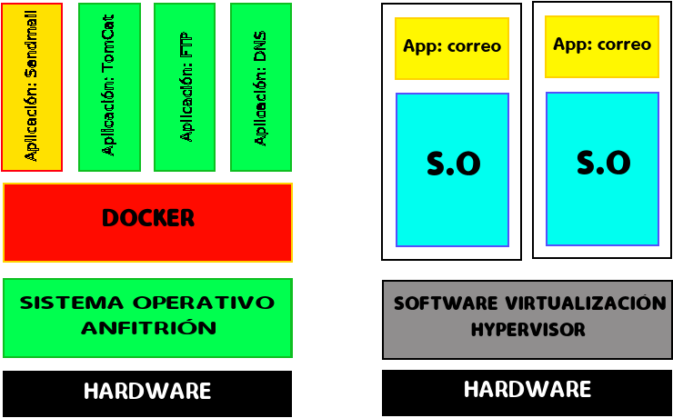

Docker es un sistema de virtualización que comparte con el anfitrión el
kernel y el sistema de archivos.
El anfitrión siempre es un sistema linux. Si estamos en Windows o MAC,necesitaré
una máquina virtual windows virtualizada con VirtualBox o similares.
Un software de máquinas virtuales necesita instalar el sistema operativo completo. Ejemplos de sistemas de virtualización:
Un software de contenedores es un sistema de virtualizacion que comparte el kernel con el anfitrion. Se basa en el concepto de microservicio, donde tengo todos los programas instalados, configurados y funcionando, gracias a los contenedores.

Para saber más sobre el tema:
Un dockerfile es una receta para crear una imagen para una aplicación particular de Docker. De este modo podemos tomar una imagen base, instalarle programas, configurar esos programas y dejarla preparada para crear contenedores a partir de ella.
Veamos un ejemplo:
# use phusion/baseimage as base image.
from ubuntu:latest
# use baseimage-docker's init system.
cmd ["/sbin/my_init"]
# install prerequisites
run apt-get update; \
apt-get install -y udhcpd
# set up start up scripts
run mkdir /etc/service/udhcpd
add udhcpd.sh /etc/service/udhcpd/run
run chmod +x /etc/service/udhcpd/run
# clean up apt when done.
run apt-get clean && rm -rf /var/lib/apt/lists/* /tmp/* /var/tmp/*
# expose the port
expose 67
expose 67/udp
expose 68
expose 68/udp
# volumes
volume /data
La línea
Creamos el archivos udhcpd.conf
# the start and end of the ip lease block
start 172.17.0.200
end 172.17.0.210
# the interface that udhcpd will use
interface eth0
opt dns 192.168.18.3 8.8.8.8
option subnet 255.255.0.0
opt router 172.17.0.1
# opt wins 192.168.10.10
# option dns 129.219.13.81 # appended to above dns servers for a total of 3
option domain local
option lease 864000
Crear el contenedor:
docker build .Lanzar el contenedor: docker run -d --net=host -p 67:67 -p 67:67/udp -p 68:68 -p 68:68/udp --name=dhcpd -v "ruta al directorio udhcpd"/data ubuntu:latest
Abrir terminal en contenedor: docker exec -ti nombre_contenedor /bin/bash